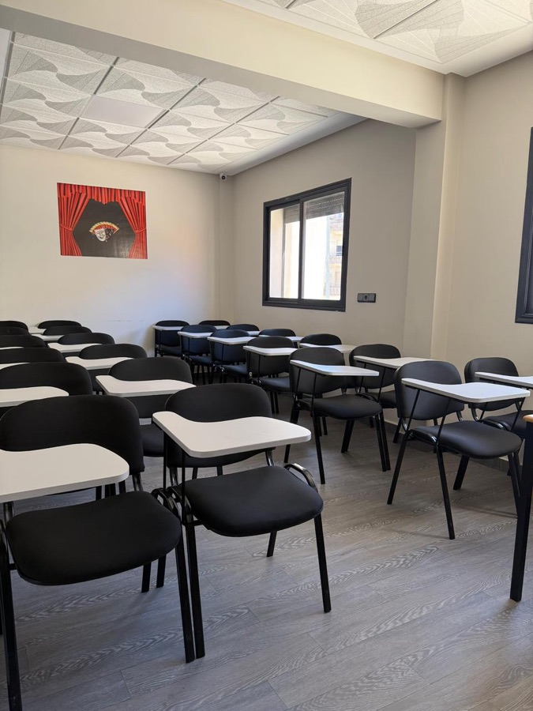
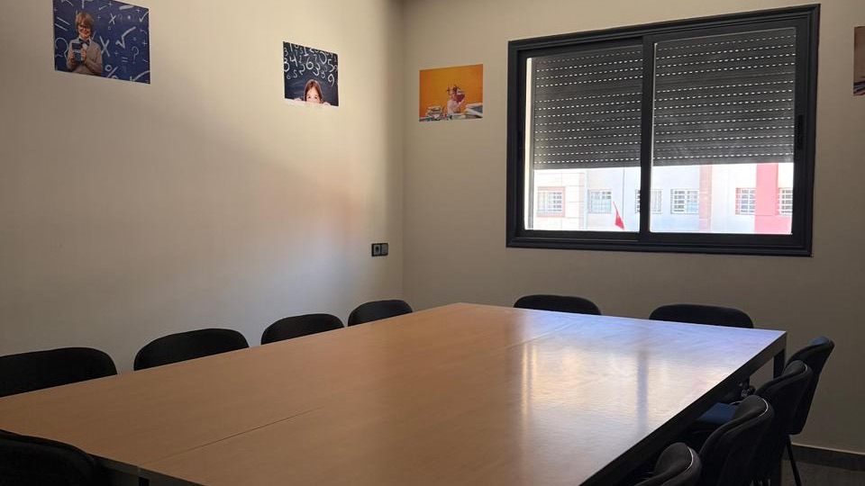
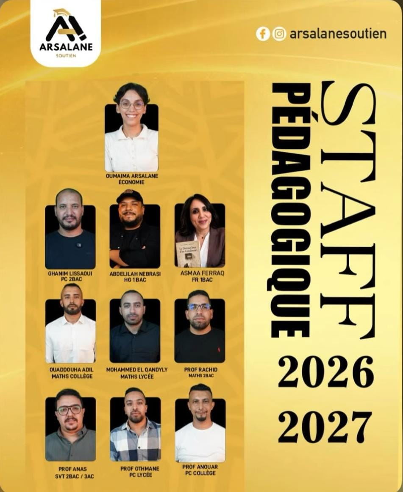
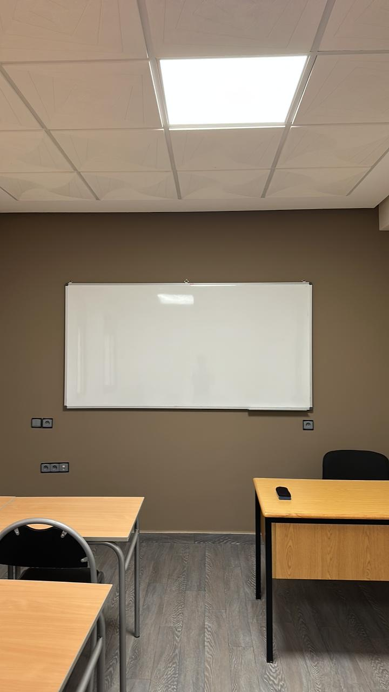
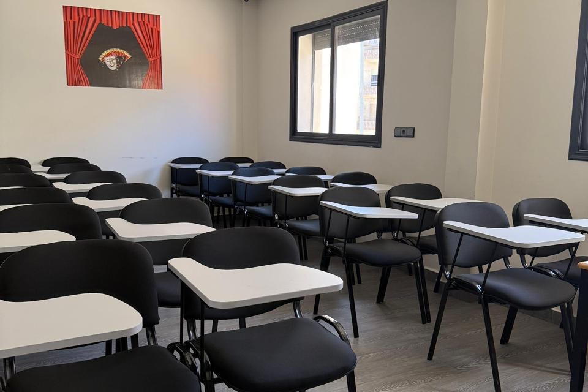
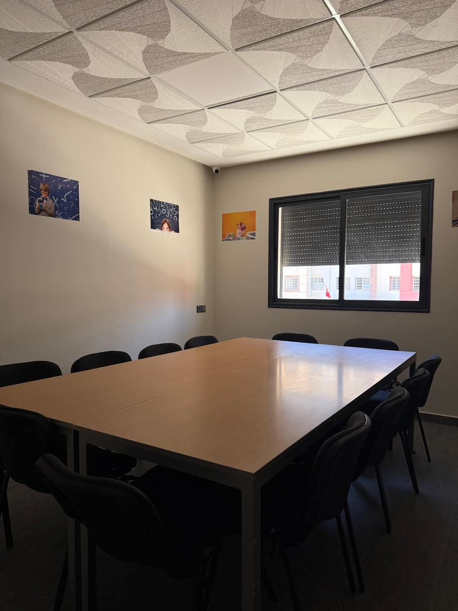

El Jadida · Hay Al Matar
Un accompagnement scolaire structuré, du primaire au lycée.
Découvrir le centre
Niveaux
- 5e · 6e Primaire
- 1re – 3e Collège
- TC → 2e Bac Lycée
Le centre
Arsalane Soutien accompagne les élèves dans leur progression scolaire à El Jadida, du primaire au lycée.
Les élèves sont réunis en petits groupes de niveau, pour que chacun soit réellement suivi pendant la séance. Le travail s'organise sur toute l'année, à un rythme régulier.
Les progrès comme les difficultés sont partagés avec les parents : l'accompagnement du centre prolonge celui de la maison.
Niveaux
Des bases du primaire aux épreuves du baccalauréat.
-
05·06
Primaire
Les classes de 5e et 6e année. Les bases, la lecture des consignes et les premières méthodes de travail.
-
C
Collège
De la 1re à la 3e année. Consolidation des acquis dans les matières principales.
-
L
Lycée
Du tronc commun à la 2e année du baccalauréat. Préparation régulière, jusqu'aux épreuves.
Matières — mathématiques, physique-chimie, SVT, français, histoire-géographie, économie.

L'approche
Un cadre pour avancer.
- 01
Un accompagnement adapté à chaque niveau scolaire.
- 02
Un environnement calme, entièrement consacré au travail.
- 03
Une équipe de professeurs présente auprès des élèves.
L'équipe
Les personnes derrière Arsalane.
Un professeur par matière, du collège au baccalauréat.

Le cadre
Des salles claires,
un lieu qui appelle au travail.



Suivre Arsalane
Contact
Nous
trouver.
en face de l'école Al Balsam,
El Jadida 24000